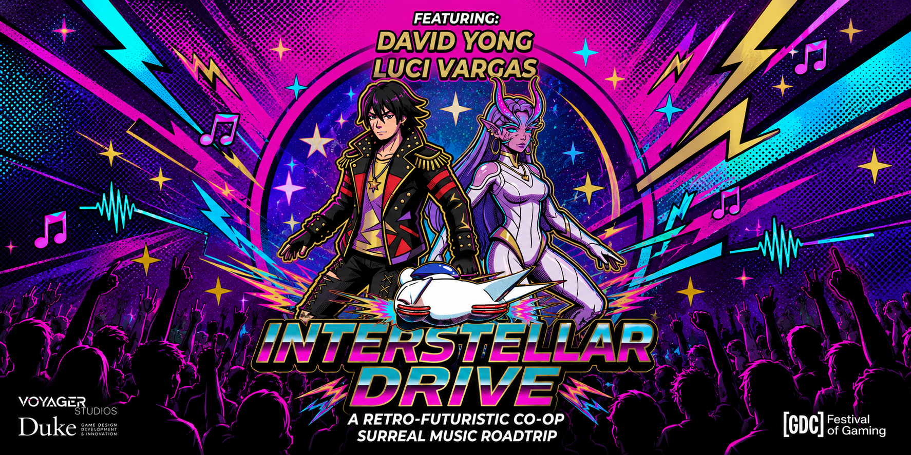
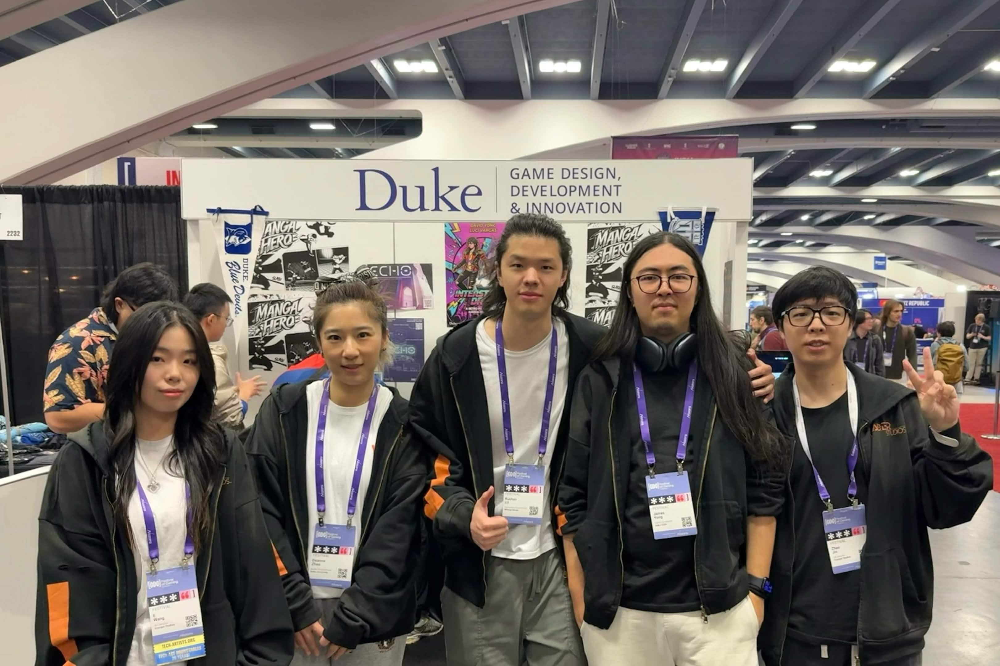
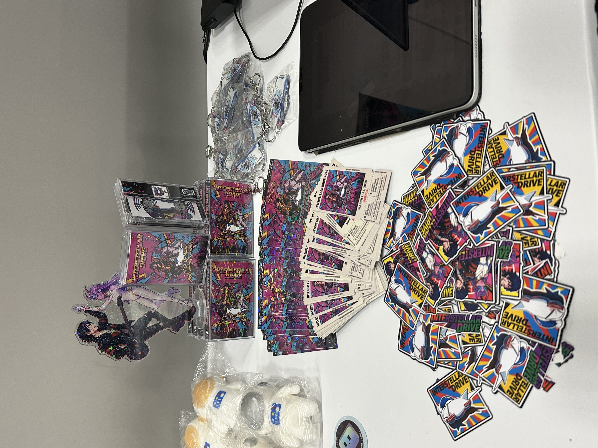
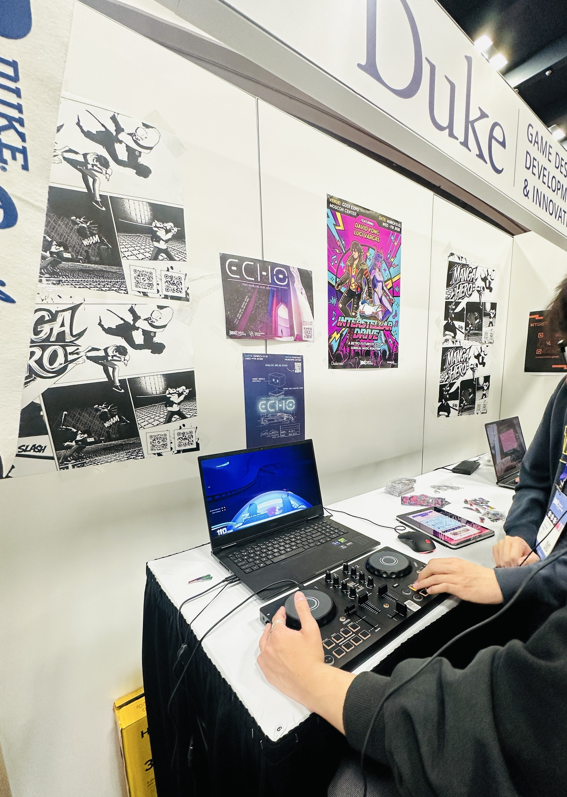
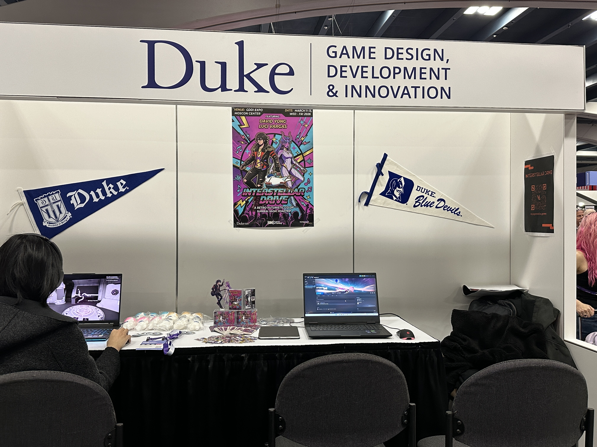
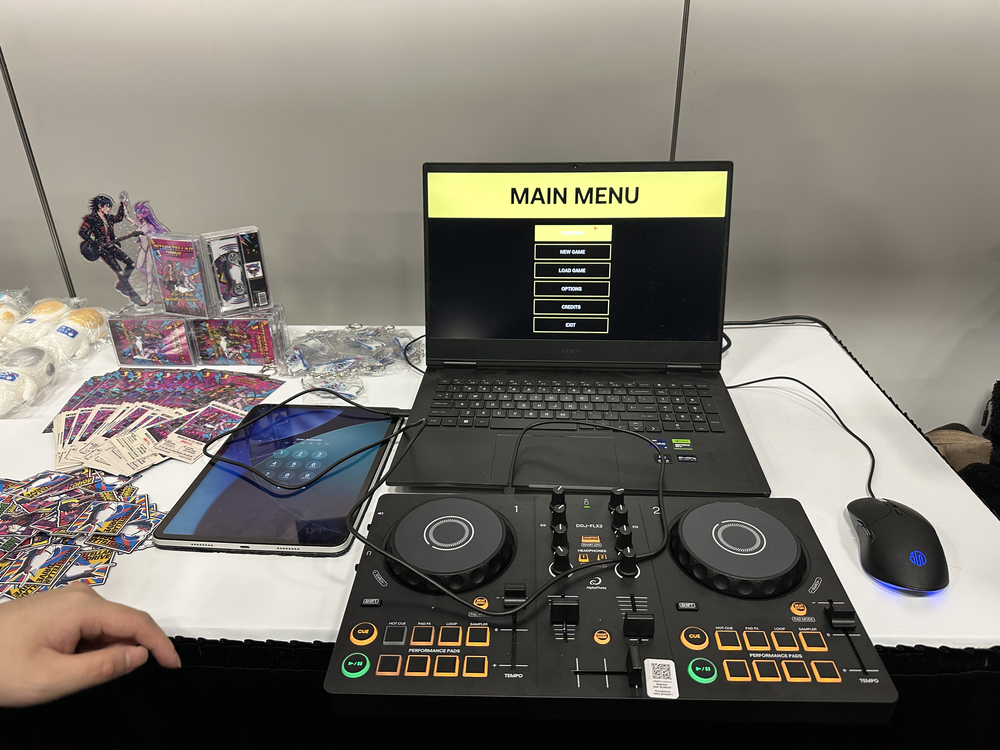
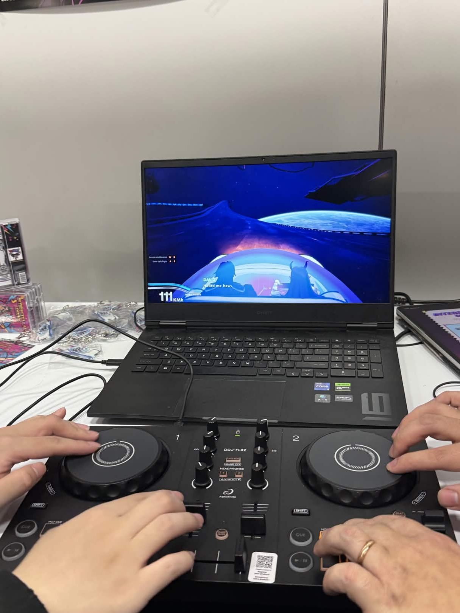

Master Capstone / Producer, Audio Director & QA Director
Interstellar Drive
A two-year master capstone: a co-op racing rhythm game set in a 1970s retro-futurist universe.
Demo Video
A focused demo clip for quickly understanding the gameplay feel, co-op rhythm, and moment-to-moment racing experience.
Vimeo Demo
Playable feel / short showcase
2026 GDC Showcase
Beyond the video game, Interstellar Drive was expanded into an interactive booth experience featuring team presentations, custom merchandise, cassette-inspired audio storytelling, and a two-player DJ controller setup that let players control the game through rhythm.

Team Showcase
Our capstone team presenting Interstellar Drive at the Duke booth.

GDC Merch & Cassette Storytelling
Custom tickets, stickers, keychains, and cassette tape packaging for the music roadtrip fantasy.

DJ Controller Play
A physical controller turned racing into a performance-like interaction.

Duke Booth Setup
The booth connected the Steam page, playable builds, merch, and project identity in one space.

Main Menu Station
The DJ controller made the game feel like a live music-performance interface.

Two-Player Co-op
Two players control the experience together, making the roadtrip feel social and musical.
My Role
I led production coordination, audio direction, and QA planning for a six-person multidisciplinary team.
Planning, Tracking & Team Flow
Maintained schedules, Jira tasks, dependencies, milestones, and team documentation.
Sound Direction & Implementation Support
Guided the sound direction for racing feedback, rhythm energy, and the retro-futurist mood.
Build Readiness & Playtest Feedback
Coordinated 20+ builds, 500+ playtesters, and actionable feedback for stakeholders.
Full Gameplay Recording
A longer gameplay recording for viewers who want to see the complete flow, pacing, and systems across a fuller play session.
YouTube Gameplay
Full recording
Production Impact
My focus was making progress visible, keeping decisions documented, and reducing friction between disciplines.
I facilitated cross-discipline communication, managed asset and information flow, identified blockers, documented 150+ meeting notes in Notion, and communicated progress and risks to stakeholders.